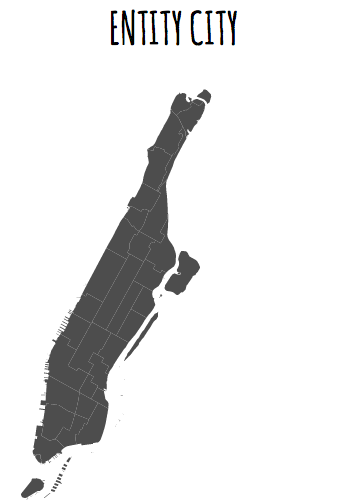

Hello! I'm Sonya Pinero, a web developer in New York City. Feel free to browse my site and do not hesitate to contact me!

Originally from Texas, I ended up in NYC to pursue my Masters in English Literature. After graduation, I decided to venture into another type of writing: the composition of code. I enrolled into General Assembly, a three-month immersive coding bootcamp. Through sweat and tears (mostly tears), I finished GA and I am now seeking new avenues in the world of web development. It's been a long journey and I'm happy I made it!
As for non-professional interests, I love science fiction and fantasy, and my favorite movies and books series include Star Wars and A Song of Ice and Fire/Game of Thrones. As a literature buff, my favorite books include Tess of the d'Urbervilles, Lolita, War and Peace, and The Great Gatsby.
Entity City
Technologies
Ruby on Rails, JavaScript, jQuery, PostgreSQL, D3.js, Backbone.js, Handlebars.js